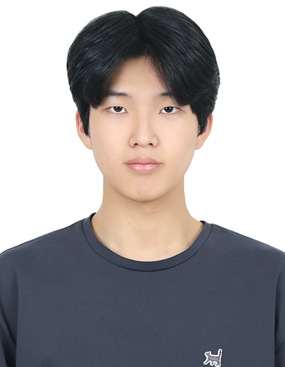
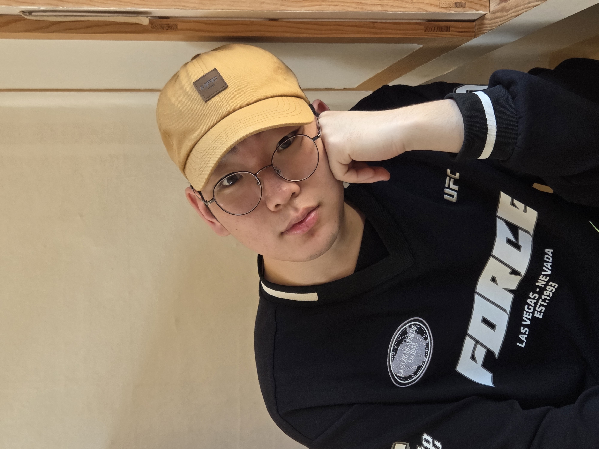
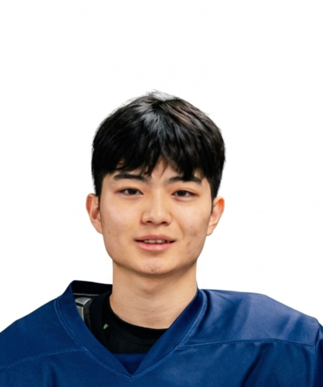
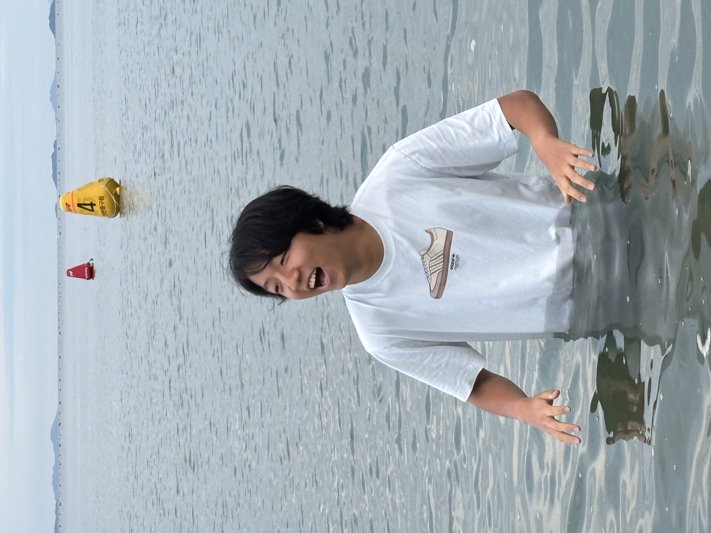

Mt. Fuji · 3,776m · July 2026
후지산
정상에서
일출을
7월 16일 등반 시작 · 8합목 산장 1박 · 7월 17일 새벽 정상 등정
준경준경 투어의 가장 특별한 순간
3,776m
일본 최고봉
7월 16일 등반 시작 · 8합목 산장 1박 · 7월 17일 새벽 정상 등정
준경준경 투어의 가장 특별한 순간
준경준경 투어의 하이라이트. 7월 16일 5합목에서 출발해 8합목 산장에서 하룻밤을 보내고, 17일 새벽 정상에서 일출을 맞이합니다.

도쿄 도착부터 귀국까지. 후지산 등정을 중심으로 도쿄의 문화와 맛을 함께 즐기는 7일의 여정입니다.
후지산
정상 등정
캐피탈스 공식




2026년 7월, 후지산 정상에서 일출을 함께 보고 싶은 분을 찾습니다.
도쿄 7일 + 후지산 등정 1박 2일의 특별한 여정.